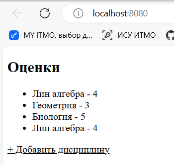

Лабораторная работа 1. Работа с сокетами
Практическое задание 1
Реализовать клиентскую и серверную часть приложения. Клиент отсылает серверу сообщение «Hello, server». Сообщение должно отразиться на стороне сервера. Сервер в ответ отсылает клиенту сообщение «Hello, client». Сообщение должно отобразиться у клиента. Обязательно использовать библиотеку socket. Реализовать с помощью протокола UDP.
Листинг кода
client_1.py
import socket
sock = socket.socket(socket.AF_INET, socket.SOCK_DGRAM)
message = 'Hello, server'.encode()
server_address = ('localhost', 10000)
try:
print('Отправка {!r}'.format(message))
sent = sock.sendto(message, server_address)
data, server = sock.recvfrom(4096)
print('Получено {!r}'.format(data))
except Exception as e:
print(f'Произошла ошибка: {e}')
finally:
sock.close()
server_1.py
import socket
# UDP
udp_socket = socket.socket(socket.AF_INET, socket.SOCK_DGRAM)
message = 'Hello, client'.encode()
server_address = ('localhost', 10000) #
udp_socket.bind(server_address)
while True:
data, address = udp_socket.recvfrom(1024)
print(f'Получено сообщение от {address}: {data.decode()}')
udp_socket.sendto(message, address)
Скриншот работы и выполнения задания 1
Практическое задание 2
Задание: реализовать клиентскую и серверную часть приложения. Клиент запрашивает у сервера выполнение математической операции, параметры, которые вводятся с клавиатуры. Сервер обрабатывает полученные данные и возвращает результат клиенту.
Варианты:
a. Теорема Пифагора
b. Решение квадратного уравнения.
c. Поиск площади трапеции.
d. Поиск площади параллелограмма.
Мой вариант - b. Решение квадратного уравнения.
Листинг кода
client_2.py
import socket
while True:
client_socket = socket.socket(socket.AF_INET, socket.SOCK_STREAM)
client_socket.connect(('localhost', 12345))
print("(a, b, c):")
a, b, c = map(float, input().split())
client_socket.send(f"{a} {b} {c}".encode('utf-8'))
result = client_socket.recv(1024).decode('utf-8')
print(f"Result: {result}")
client_socket.close()
server_2.py
import socket
import math
def solve_quadratic(a, b, c):
D = b**2 - 4 * a * c
if D < 0:
return "no sols. D<0"
else:
sol1 = (-b - math.sqrt(D)) / (2 * a)
sol2 = (-b + math.sqrt(D)) / (2 * a)
return sol1, sol2
with socket.socket(socket.AF_INET, socket.SOCK_STREAM) as server_socket:
server_socket.bind(('localhost', 12345))
server_socket.listen(1)
while True:
client_socket, addr = server_socket.accept()
with client_socket:
print(f"new request: {addr}")
data = client_socket.recv(1024).decode('utf-8')
a, b, c = map(float, data.split())
result = solve_quadratic(a, b, c)
client_socket.send(str(result).encode('utf-8'))
Скриншот работы и выполнения задания 2
Практическое задание 3
Реализовать серверную часть приложения. Клиент подключается к серверу. В ответ клиент получает http-сообщение, содержащее html-страницу, которую сервер подгружает из файла index.html. Обязательно использовать библиотеку socket. Реализовать с помощью протокола UDP.
Листинг кода
server.py
import socket
import threading
def handle_client(client_socket):
headers = 'HTTP/1.1 200 OK\r\nContent-Type: text/html; charset=utf-8\r\n\r\n'
with open('index.html', 'r') as f:
content = f.read()
client_socket.sendall((headers + content).encode('utf-8'))
client_socket.close()
def start_server():
server = socket.socket(socket.AF_INET, socket.SOCK_STREAM)
host = 'localhost'
port = 8080
server.bind((host, port))
server.listen(4)
print(f'Started on http://{host}:{port}')
while True:
client_socket, address = server.accept()
data = client_socket.recv(2048).decode('utf-8')
print(f"-> Подключение от {address}")
print(f"Запрос:\n{data}")
client_thread = threading.Thread(target=handle_client, args=(client_socket,))
client_thread.start()
start_server()
index.html
<!DOCTYPE html>
<html lang="en">
<head>
<meta charset="UTF-8">
<meta http-equiv="X-UA-Compatible" content="IE=edge">
<meta name="viewport" content="width=device-width, initial-scale=1.0">
<title>Server response</title>
</head>
<body>
<h1>
Hello from server in html
</h1>
</body>
</html>
Скриншот работы и выполнения задания 3
Практическое задание 4
Реализовать двухпользовательский или многопользовательский чат. Реализация многопользовательского часа позволяет получить максимальное количество баллов. Реализовать с помощью протокола TCP. Обязательно использовать библиотеку threading. Для применения с TCP необходимо запускать клиентские подключения И прием и отправку сообщений всем юзерам на сервере в потоках. Не забудьте сохранять юзеров, чтобы потом отправлять им сообщения.
Листинг кода
server.py
import socket
import threading
def handle_client(conn, addr):
while True:
data = conn.recv(1024).decode()
if not data:
break
print(f"User-{addr[1]}: {data}")
broadcast_message(data, conn)
conn.close()
remove_connection(conn)
def broadcast_message(message, from_conn):
for conn in connections:
if conn != from_conn:
conn.send(message.encode())
def remove_connection(conn):
connections.remove(conn)
def server_program():
server_socket = socket.socket()
server_socket.bind((socket.gethostname(), 15000))
server_socket.listen(5) # Allow up to 5 connections in the queue
print("Server started. Waiting for connections...")
while True:
conn, addr = server_socket.accept()
print("Connected to:", addr)
connections.append(conn)
thread = threading.Thread(target=handle_client, args=(conn, addr))
thread.start()
server_socket.close()
if __name__ == '__main__':
connections = []
server_program()
client.py
import socket
import threading
def receive_messages(client_socket):
while True:
data = client_socket.recv(1024).decode()
if not data:
break
print(f"Server-{client_socket.getsockname()[1]}: {data}")
def client_program():
host = socket.gethostname()
port = 15000
client_socket = socket.socket()
client_socket.connect((host, port))
print("Connected to the server.")
receive_thread = threading.Thread(target=receive_messages,
args=(client_socket, ))
receive_thread.start()
while True:
message = input(" -> ")
client_socket.send(message.encode())
if message.lower().strip() == 'bye':
break
client_socket.close()
if __name__ == '__main__':
client_program()
Скриншот работы и выполнения задания 4
Практическое задание 5
Необходимо написать простой web-сервер для обработки GET и POST http запросов средствами Python и библиотеки socket. Задание - сделать сервер, который может: * Принять и записать информацию о дисциплине и оценке по дисциплине. * Отдать информацию обо всех оценах по дсициплине в виде html-страницы.
Листинг кода
server.py
import http.server
import socketserver
import urllib.parse
class MyHttpRequestHandler(http.server.SimpleHTTPRequestHandler):
def do_GET(self):
if self.path == '/':
self.send_response(200)
self.send_header("Content-type", "text/html; charset=utf-8")
self.end_headers()
with open('data.txt', 'r', encoding='utf-8') as f:
data = f.read()
html = '''
<!DOCTYPE html>
<html>
<head>
<title>Оценки</title>
</head>
<body>
<h2>Оценки</h2>
<ul>
{}
</ul>
<a href="/form" style="color: black;">+ Добавить дисциплину</a>
</body>
</html>
'''.format(data)
self.wfile.write(bytes(html, 'utf8'))
print("GET request processed, data sent to client.")
elif self.path == '/form':
self.send_response(200)
self.send_header("Content-type", "text/html; charset=utf-8")
self.end_headers()
with open('form.html', 'r', encoding='utf-8') as f:
form_data = f.read()
self.wfile.write(bytes(form_data, 'utf8'))
print("GET request for form.html processed, form sent.")
else:
self.send_response(404)
print("GET request for unknown resource, 404 sent.")
def do_POST(self):
content_length = int(self.headers['Content-Length'])
post_data = self.rfile.read(content_length)
post_data = urllib.parse.parse_qs(post_data.decode('utf-8'))
subject = post_data.get('subject', [''])[0]
grade = post_data.get('grade', [''])[0]
with open('data.txt', 'a', encoding='utf-8') as f:
f.write('<li>' + subject + ' - ' + grade + '</li>\n')
self.send_response(303)
self.send_header("Location", "/")
self.end_headers()
print("POST request processed, data saved.")
handler_object = MyHttpRequestHandler
PORT = 8080
my_server = socketserver.TCPServer(("", PORT), handler_object)
print("Server started at http://localhost:" + str(PORT))
my_server.serve_forever()
client.py
# альтернативный вариант
import requests
data = {'subject': 'Лин алгебра', 'grade': '5'}
response = requests.post('http://localhost:8080/', data=data)
print(response)
form.html
<!DOCTYPE html>
<html lang="ru">
<head>
<meta charset="UTF-8">
<meta name="viewport" content="width=device-width, initial-scale=1.0">
<title>Document</title>
</head>
<body>
<h2>Оценка формы</h2>
<form action="http://localhost:8080" method="post">
<label for="subject">Предмет:</label><br>
<input type="text" id="subject" name="subject"><br>
<label for="grade">Оценка:</label><br>
<input type="text" id="grade" name="grade"><br><br>
<input type="submit" value="Submit">
</form>
</body>
</html>

Вывод
В рамках данной лабораторной работы были получены навыки по реализации web-серверов и использования сокетов при помощи языка программирования python. Были получены знания по клиент-серверному взаимодействию с помощью протоколов UDP и TCP. Также были систематизированы знания по сетевому взаимодействию, структурами http-запросов и процессами их создания и обработки. Таким образом, данные знания и навыки помогли понять, как происходит сетевое взаимодействие при реализации web-серверов, а также как можно применять полученные знания при создании веб-приложений.